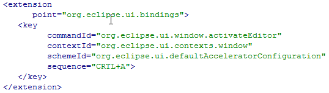
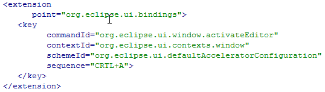

RAP 1.4 M5 - New and Noteworthy
Here's a list of the most noteworthy things that are available in the milestone build 1.4 M5 (February 4, 2011) which is now available for download.
This list shows all bugs that were fixed during this milestone.
ToolTip widget
RWT now has an implementation of the ToolTip widget. It represents popup
windows that are used to inform or warn the user.
The new ToolTip widget is fully themeable.

Note: By introducing this new widget we had to rename the existing CSS element
This change was necessary to remain consistent within our naming scheme. Please update your custom themes accordingly.
Note: By introducing this new widget we had to rename the existing CSS element
ToolTip to Widget-ToolTip.
This CSS element is used for styling tooltip texts on widgets, as set
using Control#setTooltipText().
The new ToolTip widget can now be styled with the CSS element
ToolTip.
This change was necessary to remain consistent within our naming scheme. Please update your custom themes accordingly.
Themeable Scrollbars

The new scrollbar-implementation is now fully themeable. This is also another small step in our effort to support mobile devices: The scrollbars can now be made wider, so it becomes much less awkward trying to hit the up/down buttons on a touch-interface. As a result the Table is now finally usable on iPad & Co.
New API added
This will make it easier to reuse existing code or to utilize new
features. Here is a list of API methods added in this milestone:
CLabel#setBackground( Color[], int[] )Browser#getWebBrowser()Image( Device, int, int )constructorGC#setAdvanced( boolean )andGC#getAdvanced()
New Bundles included
As of this milestone, RAP will be shipped with three new bundles
included in the target components:
- org.eclipse.equinox.servletbridge
- org.eclipse.equinox.servletbridge.extensionbundle
- org.eclipse.equinox.http.servletbridge
Tooltips for TreeViewer
The

TreeViewer now supports tooltips for its content too.
It can be activated by calling
ColumnViewerToolTipSupport#enableFor().
Afterwards you need to override
CellLabelProvider#getToolTipText(Object) and have it
return the respective tooltip text. Other tooltip-related methods
(getToolTipBackgroundColor, etc.) are not supported.
JFace and Workbench upgraded to 3.7
With this milestone, the JFace and Workbench implementations shipped
with RAP has been upgraded to the Eclipse 3.7 code base. The current
version is based on M2 and will be updated again before the release.
KeyBindings
One of the most requested features in RAP is finally available. It's
now possible to use key bindings, for example CTRL+S to save editors.
You can define new keybindings using the standard extension point:
 Emacs key sequences are not supported and the
 Emacs key sequences are not supported and the
emacsAcceleratorConfiguration scheme is missing.
The above features are just the ones that are new since the last milestone build. Summaries for earlier builds: